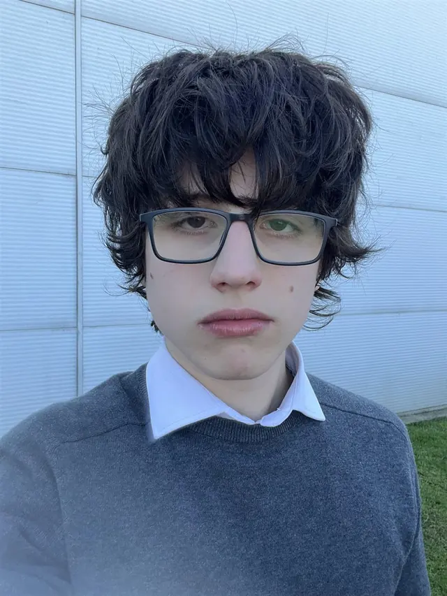
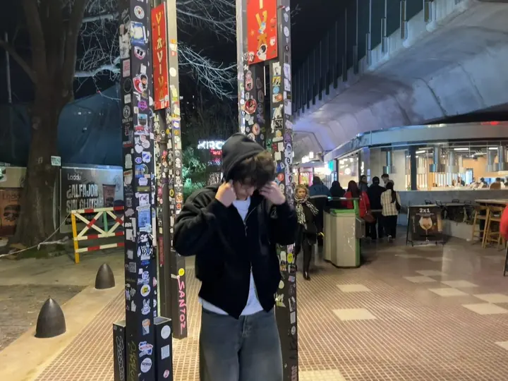

Sobre mí
Estudiante de IT Bilingüe y desarrollador web. Trabajo en el cruce entre diseño e ingeniería, desde la interfaz hasta la base de datos, con la convicción de que cada decisión técnica debe tener un porqué.
Me interesan los sistemas que resuelven problemas concretos y las preguntas que la tecnología deja abiertas. Complemento el desarrollo con experiencia emprendedora y un dominio avanzado del inglés.
Formación
ITSP · Instituto Tecnológico Superior de Paysandú
Tecnologías de la Información Bilingüe.
Idiomas
- EspañolLengua maternaNativo
- InglésExpositor en el XIII Regional Seminar for Teachers of English (Rivera, Uruguay)C1
Certificados
- XIII Regional Seminar for Teachers of English: AI-ming for the FutureANEP · Políticas Lingüísticas (CODICEN), DGES y CFE
- Presentación Oral: PARKEX - Monitoreo en tiempo real de la ocupación de posiciones y verificación automatizada de plazas para personas con discapacidad mediante sensórica y visión por computadoraUTEC – Universidad Tecnológica · III Semana Académica de Ingeniería en Logística
Mi toolkit
- Java
- JavaScript
- Node.js
- Express
- PHP
- MySQL
- PostgreSQL
- Supabase
- HTML
- CSS
- Git
- Linux
- Arduino
- Figma
- DaVinci Resolve
- Redes
- Cisco Packet Tracer


ÍNDICE
Flechas para cambiar de proyecto, Enter para abrir su página.
Hablemos

Abierto a proyectos, colaboraciones y nuevas oportunidades.
-
Mail
luciofacchin.dev@
gmail.com -
GitHub
github.com/
lucioooofacc -
LinkedIn
linkedin.com/in/
luciofacchin